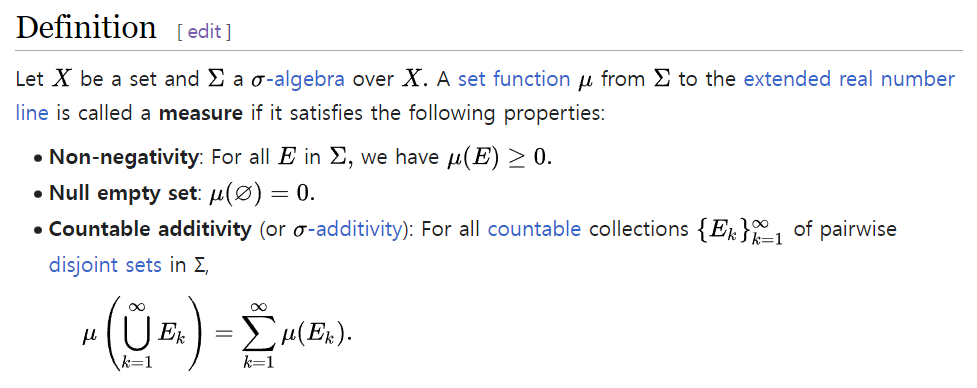
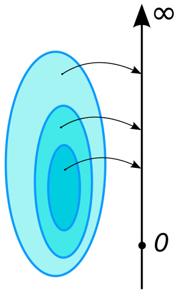
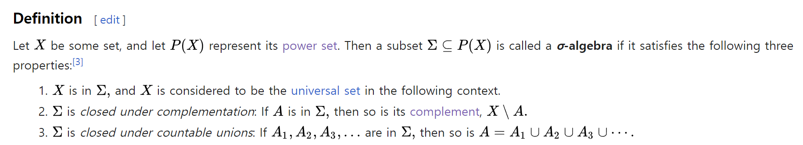

전체적인 흐름정리
- 지난 포스팅에서는 확률을
모순없이정의할 수 있는 집합들의 모음인simga field에는 어떠한 조건이 들어갈지에 대해 대략적으로 파악하고 또한sigma field를 정의하기거 얼마나 어려운지를 정리했었습니다. - 이번 포스팅에서는
sigma field에 보다 엄격하게 정의하기 위한 추가적인 조건들을 정리합니다. - 또한 조건들을 여러가지 조건들을 최대한 간단히하여
sigma field를 정의합니다.
background
용어정리
- 측정할 수 있는 집합 = 잴 수 있는 집합 = measurable set
- 측정할 수 있는 집합들의 모임 =
measure에서sigma field
measure
- 지금까지 우리는
sigma field를 확률을모순없이정의할 수 있는 sample space의 부분집합의 모음이라고 생각하며 확률에 대해서만 생각해왔습니다. - 하지만 사실
sigma field는확률을 포함하는 좀 더 넓고 일반적인 개념인measure와 함께 사용합니다. measure는 기하학적인 측정(길이,면적,부피)과 더불어 질량,확률과 같은 다른 흔한 개념을일반화또는형식화한 것입니다.- 분명히 이러한 개념은 서로다른 구별되는 개념이지만 유사한 점이 많고 하나의 수학적인 맥락으로 자주 취급할때가 많다고 합니다.
- 따라서 이러한 개념들을 조금 더 일반화한 개념인
measure를 사용합니다. - 정의는 다음과 같습니다.

measure에서 생각해봤을때sigma field는 모순없이 잴 수 있는 전체집합의 부분집합(잴 수 있는 집합)의 모음입니다.(collection of measurable sets)

measure는 함수로 본다면monotonefunction으로 생각할 수 있습니다.- 예를 들어 \(A \subseteq B\)라면 \(\mu(A)\leq\mu(B)\)임이 일반적입니다.
sigma field의 조건들 구하기
구해놨던 조건들
- sigma field는 확률을 모순없이 정의할 수 있는 표본공간의 부분집합들의 모음이었습니다.
- 지금까지 구해본 sigma field가 만족하는 조건은 대략적으로 다음과 같았습니다.
추가적인 조건들 구하기
(엄밀하지 않은 설명입니다.)
- 확률은 위와 같은
measure에 한 종류입니다. - 여기서
measure중 하나인길이에 대하여 다음을 생각해봅시다.- [1,3]과 [2,4]의 길이가 어느정도인지 잴 수 있는(=측정할 수 있는) tape가 있어
- [2,3]도 그러면 잴 수 있어.(tape의 길이가 [2,3]보다는 길테니까?!)
- 위의 예시는 두 구간이 각각 잴 수 있다면 겹치는 구간도 잴 수 있다는 것을 의미합니다.
- 이렇게 또다른
measure인 길이에서sigma field를 생각해봤을때 겹치는 구간에 대해서 잴 수 있다는 것은 합리적입니다. - 확률의 입장에서 교집합을 잴 수 있다는 것은 합리적이지 않아 보일 수 있습니다.
- 하지만 여기서는 일반화된
measure의 개념에서 생각하기 때문에 교집합도 가능하다고 가정합니다. - 따라서 두 집합이 각각 잴 수 있다면 두 집합의 교집합도 잴 수 있다는 다음의 명제는
sigma field의 조건입니다.
- 교집합을 잴 수 있다면 합집합도 잴 수 있음은 당연한 사실입니다.
- 따라서 다음의 명제도 참입니다.
(엄밀하진 않음)
- 확률의 공리를 보면 \(\sigma\)-additivity라 해서 교집합이 없는(disjoint) 각각의 집합들이 셀 수 있는 집합(countable set)이 \(\mathcal{F}\)에 포함되면 그것들의 합집합도 잴 수 있다고 정의하고 있습니다
- 공리에 포함됐다는 것은 어느정도
자명한사실이라고 합의한 것입니다.(납득이 잘 되지 않지만 일단 이렇게 하기로 했구나~ 이런 느낌으로 넘어가야 할 것 같습니다.)
- 조건 5와 7을 결합하면 다음과 같은 새로운 조건을 이끌어낼 수 있습니다.
- 이는 disjoint일 뿐만 아니라 disjoint가 아닌 집합들에도 적용되는 더 넓은 조건입니다.
- 이외에도 얼마든지 다른 조건을 만들어낼 수 있습니다.
- 예를들면 다음과 같은 조건이 있습니다.
최대한 간단히 정리하기
- 지금까지 나온 모든 조건들은 이렇습니다.
- 여기서부터는 위의 모든 조건들을 전부다 포함하도록 가장 간단히 몇개의 조건만 남겨서
sigma field를 정의해보겠습니다.
- 조건9,10,11은 조건 2,5,6,7에 의하여 도출할 수 있습니다. 따라서 9,10,11은 삭제합니다.
- 조건1은 2에 의해서 공집합까지 표기할 필요가 없도록 수정할 수 있습니다.
- 조건4는 2,5에 의해서 도출할 수 있는 조건입니다. 따라서 4는 삭제합니다.
- 조건5는 2,6에 의해서 도출할 수 있는 조건입니다. 따라서 5는 삭제합니다.
- 조건6은 조건3의 disjoint집합을 포함합니다.. 따라서 3을 삭제합니다.
- 조건8은 조건6을 포함하는 더 넓은 countable union입니다. 따라서 6을 삭제합니다.
- 조건8은 조건7의 disjoin집합을 포함하는 countable union입니다. 따라서 7을 삭제합니다.
- 삭제조건 : 3,4,5,6,7,9,10,11
- 변경될 조건 : 1
- 남아있는 조건 : 1,2,8
- 이렇게 반영한 조건들이 바로
sigma field의 조건입니다.
Definition of sigma field
- 남겨놓은 조건으로 시그마 필드를 정의해보겠습니다.
- \(\mathcal{F} \subseteq 2^{\Omega}\)는
sigma field가 표본공간의 모든 부분집합들(powerset,멱집합)의 중 일부를 포함하는 모음임을 의미합니다.(모든 부분집합들을 고려하면 확률은 모순이 발생할 수 있었습니다.) - 3가지 property는 시그마 필드는 전체집합을 포함하며 여집합에 닫혀있으며 countable union(가산합집합)에 대해 닫혀있음을 의미합니다.(여태까지 구해왔던 조건)
- 함축된 조건들도 합쳐서 생각해보면 시그마 필드는 합집합,교집합,차집합,여집합에 대해 닫혀있음을 의미합니다.(조금 더 구체적인 의미는 이렇네요.)

- 위의 정의는 위키피디아에서 정의한 시그마필드의 조건입니다.
- \(X = \Omega\)이며
- 2는 여집합도
sigma field에 포함된다는 조건입니다. - 3는 여집합도 countable union도
sigma field에 포함된다는 조건입니다. - 결국 우리가 여태까지 유도하고 정의한
sigma field와 같음을 알 수 있습니다.
Definition of mesurable space
sigma field는전체집합을 알아야 포함되는 원소들을 명확하게 정의할 수 있습니다.(전체집합을 모르면 명백하게 모르죠!)- 또한
measure는sigma field의 원소를 포함하는 전체집합이 무엇인지와 밀접한 연관이 있습니다. - 예를 들어, 전체집합이 실수 집합에 대해서 대표적인
measure는 르벡측도가 있고 이산 공간에서는 이산측도나 카운팅 측도가 사용될 수 있습니다. - 위의 두 가지 이유에 의해서
sigma field는 전체집합과 함께 명시하는게 더 합리적이므로measurable space를 정의합니다.
정리
- 모순없이 확률을 정의할 수 있는 집합들의 모음인
sigma field를 만족하기 위한 조건을 알아봤습니다. - 여러가지 서로다른 조건들은 마지막으로 총 3개의 조건들로 함축됐습니다.
- 또한 그러한 조건들의 의미하는 바는
sigma field는 집합에서 대표적인 4가지 연산에 대해서 닫혀있음을 의미했습니다. sigma field는 전체집합과 함께 표기하는 것이 더 합리적이므로 둘을 한데 묶은 tuple인measurable space를 정의합니다.